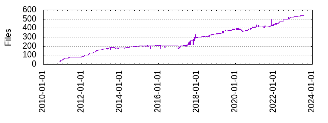

Files
- Total files
- 540
- Total lines
- 190211
- Average file size
- 14775.43 bytes

| Extension | Files (%) | Lines (%) | Lines/file |
|---|
| 8 (1.48%) | 2685 (1.41%) | 335 |
| bat | 2 (0.37%) | 38 (0.02%) | 19 |
| bazel | 2 (0.37%) | 111 (0.06%) | 55 |
| build | 3 (0.56%) | 465 (0.24%) | 155 |
| cmake | 10 (1.85%) | 1824 (0.96%) | 182 |
| cmd | 1 (0.19%) | 17 (0.01%) | 17 |
| cpp | 209 (38.70%) | 35882 (18.86%) | 171 |
| h | 1 (0.19%) | 20 (0.01%) | 20 |
| hpp | 175 (32.41%) | 29223 (15.36%) | 166 |
| in | 4 (0.74%) | 251 (0.13%) | 62 |
| input | 3 (0.56%) | 4 (0.00%) | 1 |
| json | 2 (0.37%) | 35 (0.02%) | 17 |
| md | 39 (7.22%) | 7780 (4.09%) | 199 |
| png | 4 (0.74%) | 281 (0.15%) | 70 |
| ps1 | 1 (0.19%) | 19 (0.01%) | 19 |
| py | 31 (5.74%) | 2472 (1.30%) | 79 |
| sh | 2 (0.37%) | 52 (0.03%) | 26 |
| txt | 32 (5.93%) | 108782 (57.19%) | 3399 |
| user | 1 (0.19%) | 23 (0.01%) | 23 |
| yml | 10 (1.85%) | 524 (0.28%) | 52 |